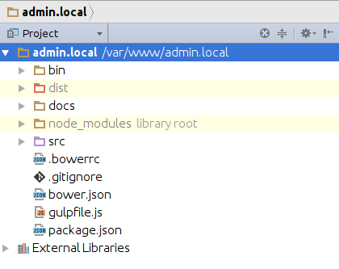
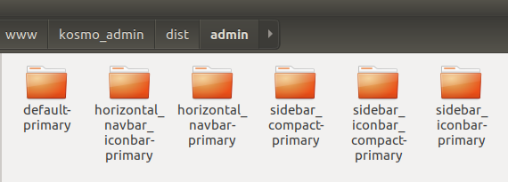
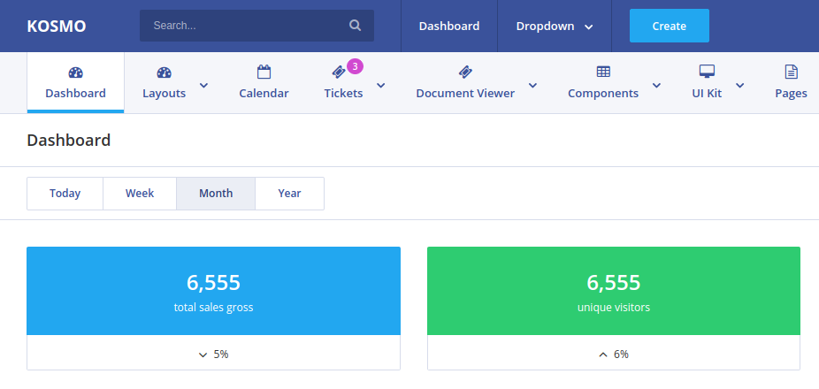
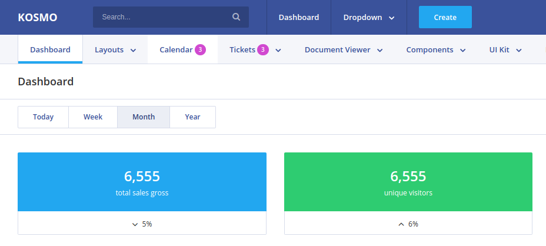
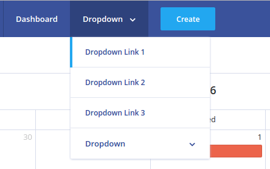

Documentation
Overview
Kosmo is a multipurpose powerful and super flexible responsive Bootstrap 4 admin framework for modern web applications of any kind!
6 different layouts, 1000+ commented HTML pages, 1000+ components with various configurable features, 100+ plugins and extensions and many more bonuses such as the Starter kit with a set of blank pages will make your developer’s life so much easier! Kosmo is fully responsive and looks perfect on all devices including mobiles and tablets.
Dozens of powerful and easy to modify and to configure components (thanks to scss/sass!) can become the foundation of your idea and can quickly turn it into reality as well as it’s ready to be integrated into your existing project.
Built on top of modern and reliable libraries our theme adopts best practices both of Web and Mobile segments. Our thoughtful approach to choosing most convenient modern technologies along with our careful work allows Kosmo to be seamlessly integrated into your project bringing A LOT of value and making your life A LOT easier in the long run!
Kosmo is fully responsive admin dashboard template built with modern web technologies: Bootstrap 4 Framework, HTML5 and CSS3. It has huge collection of reusable UI components and it’s also integrated with the latest jQuery plugins.
The theme itself is very lightweight and easily customizable, it’s designed with both end users and developers in mind so that it not only contains presentable components but also allows developers to easily configure and modify the components to fit all possible needs.
Kosmo can be used for all types of web applications and can entirely fit the needs of admin panels, project management systems, admin dashboards, application backends, CMS and CRM software, business websites, corporate and portfolio projects, blogs and more.
Large number of widgets is going to make your project growing fast and easy. Kosmo works on all major web browsers, Desktop, iPhone, iPad, Tablet and all other smart phone device.
Support
This documentation is to help you understand the template's structure. Please go through the documentation carefully to understand how this template is made and how to edit this properly. Basic HTML, CSS and JS knowledge is required to customize this template.
If you have any questions that are beyond the scope of this help file, please feel free to get in touch.
Support requests can go through the form on my ThemeForest profile page or via email.
Support for my items includes:
- Responding to questions or problems regarding the item and its features
- Fixing bugs and reported issues
- Providing updates to ensure compatibility with new software versions
Item support does not include:
- Customization and installation services
- Support for third party software and plug-ins
Before seeking support please:
- Make sure your question is a valid item Issue and not a customization request.
- Make sure you have read through the documentation and any related video guides before asking support on how to accomplish a task.
- If you have customized your item and now have an issue, back-track to make sure you didn't make a mistake. If you have made changes and can't find the issue, please provide us with your changelog.
- Most of the time we find that the solution to people's issues can be solved with a simple "Google Search". You might want to try that before seeking support. You might be able to fix the issue yourself much quicker than we can respond to your request.
- Make sure to state the name of the item you are having issues with when requesting support via ThemeForest.
Installing Nodejs, Npm, Gulp
To install Nodejs, Npm, Gulp, please take the following steps:
For Linux:
sudo apt-get install nodejs
sudo apt-get install npm
sudo npm install -g gulp
For Windows:
Click the link https://nodejs.org/en/download/ and download the installation package of version 6.9.5, then run the command:
npm install -g gulp
Then you need to go to the root directory of the downloaded and unpacked archive, and run the command:
npm install
This command will install the necessary libraries for Nodejs, as a result,
a file called node_modules must appear in the root directory, check if it is there.
That's all you need to work with the source admin code, now let us examine the structure of
directories.
Directory Structure
Root Directory

The root directory contains files:
-
bin - bash prompt files are located here that generate
different types of administrator templates. For example, the file
bin/create_navbar_horizontal_layout.shwill generate templates for all color schemes (themes) with a horizontal menu. (if you are using linux) -
dist - ready templates, styles, scripts, and images are located here. This folder contains
two subfolders
adminandemails. The subfolder admin contains templates, and emails contains ready templates of letters. - docs - current documents
- node_modules - modules for Nodejs needed to work with a source code.
-
src - source code of html templates, sass styles and scripts. The folder
src/assetsstores styles, the foldersrc/libsstores library javascripts, and the foldertemplatesstores html templates.
Directory dist/admin
This directory receives ready-to-use html templates with styles and scripts. This folder contains all types of layouts for a primary theme only.

By default, the layouts for a primary theme only are located here.
List of Layouts:
-
default - standard template with the following sidebar and the top menu:

-
horizontal_navbar_iconbar - horizontal menu with icons on top:

-
horizontal_navbar - simple horizontal menu:

-
sidebar_compact - compact sidebar with no submenu:

-
sidebar_iconbar_compact - compact sidebar with icons with submenus:

-
sidebar_iconbar - sidebar with icons with no submenu:

Connecting files and libraries
All libraries are stored in the root directory of the admin panel dist/admin/admin-name/libs. We do not change the original styles of all libraries
that are used in the admin panel, instead we create a separate file that contains the styles for the admin panel.
Connection is carried out as follows, for example:
<!-- BEGIN HEAD -->
<head>
<meta charset="UTF-8">
<title>Kosmo Bootstrap 4 Admin Framework & Template</title>
<meta http-equiv="X-UA-Compatible" content="IE=edge">
<meta name="viewport" content="width=device-width, initial-scale=1.0">
<!-- BEGIN GLOBAL MANDATORY STYLES -->
<link rel="stylesheet" type="text/css" href="libs/bootstrap/css/bootstrap.min.css">
<link rel="stylesheet" type="text/css" href="libs/font-awesome/css/font-awesome.min.css">
<link href="https://fonts.googleapis.com/css?family=Open+Sans:400,600,700" rel="stylesheet">
<link rel="stylesheet" type="text/css" href="libs/tether/css/tether.min.css">
<link rel="stylesheet" type="text/css" href="libs/jscrollpane/jquery.jscrollpane.css">
<link rel="stylesheet" type="text/css" href="libs/flag-icon-css/css/flag-icon.min.css">
<link rel="stylesheet" type="text/css" href="assets/styles/common.min.css">
<!-- END GLOBAL MANDATORY STYLES -->
<!-- BEGIN THEME STYLES -->
<link rel="stylesheet" type="text/css" href="assets/styles/themes/primary.min.css">
<!-- END THEME STYLES -->
<link rel="stylesheet" type="text/css" href="libs/flatpickr/flatpickr.min.css">
<link rel="stylesheet" type="text/css" href="libs/fullcalendar/fullcalendar.min.css"> <!-- Original -->
<link rel="stylesheet" type="text/css" href="assets/styles/libs/fullcalendar/fullcalendar.min.css"> <!-- Customization -->
<link rel="stylesheet" type="text/css" href="assets/styles/apps/calendar.min.css"> <!-- Customization -->
</head>
<!-- END HEAD -->
Block GLOBAL MANDATORY STYLES
In this block, basic styles required for any page in the admin panel are connected.
The file assets/styles/common.min.css contains all basic styles for the admin panel, do not delete it.
Block THEME STYLES
In this block, a theme for the admin panel is connected, by default, the theme primary is used.
To learn how to change the theme, see the section Connecting and creating themes.
Then the styles for libraries are connected, first come the original library files from the folder libs,
then the customization files of these libraries, i.e. the styles that convert usual source library styles into beautiful styles of the admin panel.
Changed styles for the libraries are located in the folder assets/styles/libs. Do not be confused!
As you can see, all the files have the extension .min.css - this means they have already been compressed, but if you need the source code of this file, you can
find it next to a compressed file, for example, the original file with styles for assets/styles/common.min.css will be located in assets/styles/common.css
Gulp commands
For those who know what gulp is and know how to use it, it is best to work with the source code in the folder src.
By using Gulp, you can generate different types of admin panels.
Let's start from the first stage, in gulpfile.js there is a variable colorsMap, it contains the values of colors, badges, buttons, and hover effects.
For example, a primary theme primary has blue badges, hover effects and buttons (info), and a big orange button Activate (danger):
Hover effect in the sidebar:

Buttons and hover effects for the menu in the top navigation:

Activation button and badges in the top navigation:

When creating a new theme or editing an existing one, you can replace these variables with your values, and they will apply to the entire template. When you are
creating a new template, you have to create a new value with the name of the new template and insert your values there, for example, the name of the theme will be my-new-theme, and
elements will have green color (success):
'my-new-theme': {
navbarBadgeColor: 'success',
navbarTabsItemHighlight: 'success',
navbarMenuItemHighlight: 'success',
sidebarItemHightlightColor: 'success',
navbarCreateButtonColor: 'success',
navbarActionButtonColor: 'success'
}
Then add a file with styles to src/styles/themes/my-new-theme.scss and start the command gulp --theme my-new-theme, this will result
in the creation of a ready template in dist/admin/default-my-new-theme
Connecting and creating themes without using Gulp
By default, the archive contains layouts with a primary theme only. But if you want to connect a different color scheme, it is very simple.
Each folder in dist/admin/admin-name has the folder assets/styles/themes, it contains all themes for the current layout. If you need a different theme,
just replace it in html templates <link rel="stylesheet" type="text/css" href="assets/styles/themes/primary.min.css">. The rest of themes
can be deleted, if you do not need them.
If you want to create your own color scheme, just copy the primary theme and change colors in the styles.
Resources
- Images from www.pexels.com (Free for commercial use)
- Avatars from www.uifaces.com (Free for commercial use)
Plugins
- Autosize (MIT)
- Font Awesome (MIT)
- jQuery File Upload (Blueimp) (MIT)
- JavaScript Load Image (Blueimp) (MIT)
- JavaScript Templates (Blueimp) (MIT)
- Bootstrap (MIT)
- Bootstrap Select (MIT)
- Bootstrap Sweet Alert (MIT)
- Bootstrap Table (MIT)
- Bootstrap Touchspin (Apache 2.0)
- Bootstrap clockpicker (MIT)
- Bootstrap Datetime Picker (MIT)
- FullCalendar (MIT)
- FullCalendar Scheduler (MIT)
- Form Validation (MIT)
- jQuery (MIT)
- jQuery Typeahead (MIT)
- jScrollPane (MIT)
- jsPDF (MIT)
- jsPDF AutoTable (MIT)
- Moment (MIT)
- Moment Timezone (MIT)
- Peity (MIT)
- ResponsiveJS (MIT)
- Select2 (MIT)
- Slick (MIT)
- Table Export jQuery plugin (MIT)
- Tether (MIT)
- Bootstrap MaxLength (MIT)
- jQuery Mask Plugin (MIT)
- Quill (MIT)
- C3.js (MIT)
- Ion rangeSlider (MIT)
- Date Range Picker (MIT)
- Datatables.net (MIT)
- Loading Overlay (MIT)
- FlatPick (MIT)
- CountUp (MIT)
- Izi Modal (MIT)
- Gridstack (MIT)
- Jquery Confirm (MIT)